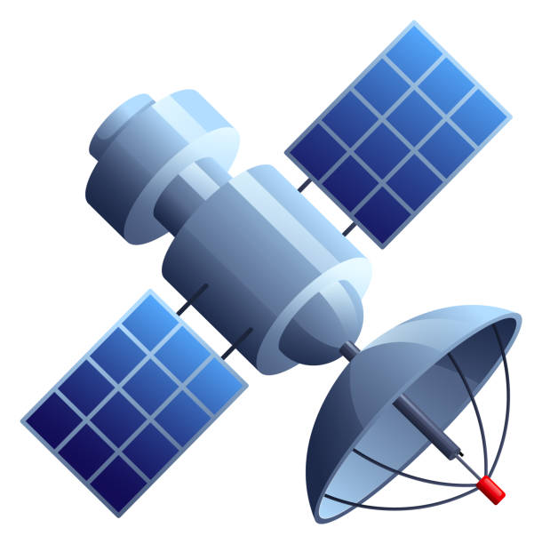
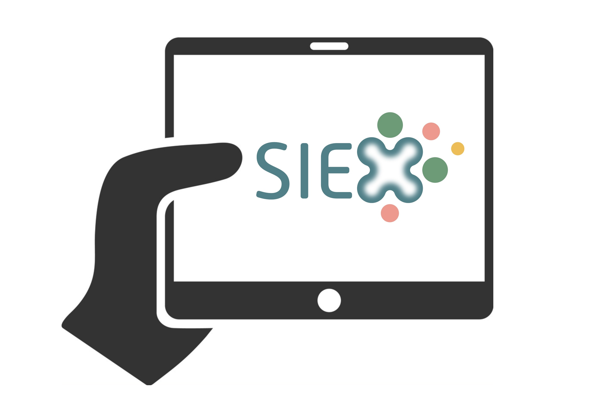
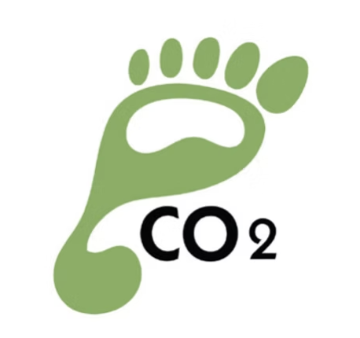
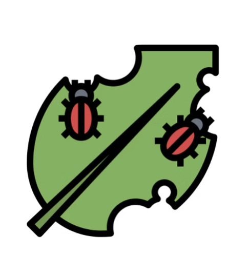
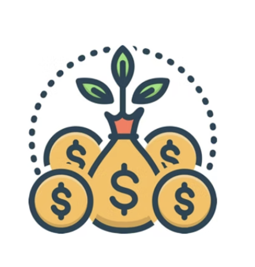
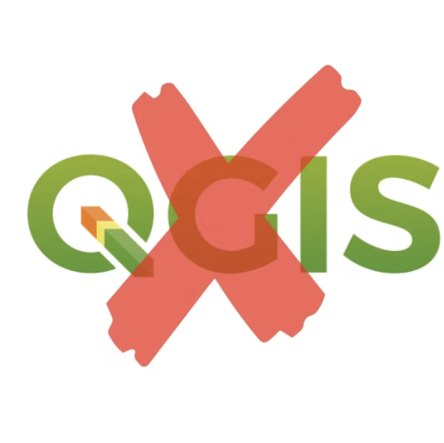
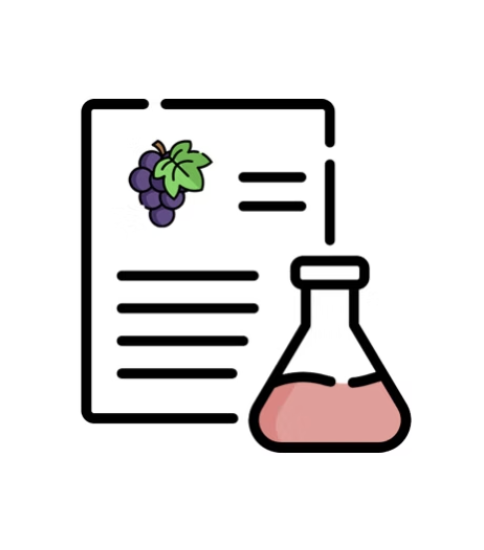
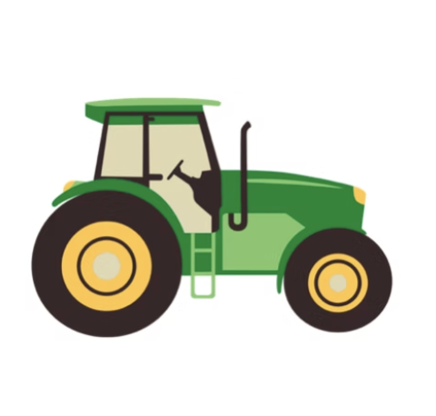
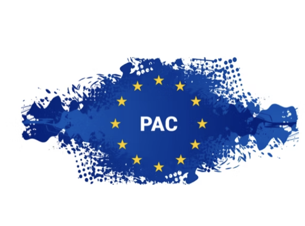

Arcadia integra datos climáticos, análisis satelital e inteligencia artificial para optimizar la gestión agronómica y mejorar la toma de decisiones.
Zonifica a tiempo real y detecta diferencias de vigor y disponibilidad hídrica dentro de cada parcela mediante análisis satelital avanzado.
Permite identificar variabilidad productiva y optimizar el manejo agronómico.

Disponemos del Cuaderno de Explotación Digital exigido por el Ministerio con base de datos actualizada.
Registra tratamientos, operaciones y documentación de forma rápida, sencilla e intuitiva.

Medimos la sostenibilidad de cada parcela en función de los productos aplicados y el impacto ambiental asociado.
Permite mejorar la gestión ambiental de la explotación y reducir la huella ecológica.

Información y pronósticos meteorológicos de alta precisión sobre temperatura, humedad relativa y precipitaciones.
Disponemos de estaciones meteorológicas propias e instalaciones en campo.
Disponemos de modelos predictivos para seguimiento de enfermedades desarrollados junto al IRTA.
Permite anticipar riesgos fitosanitarios y optimizar tratamientos.

Crea tus stocks, controla costes, planifica actividades y genera órdenes de trabajo desde la plataforma.
Sistema automático de alertas para límites de dosis o aplicaciones.

Nuestra plataforma sustituye y mejora el uso de QGIS permitiendo gestionar capas geográficas de forma sencilla.
Sube archivos, integra datos externos y genera informes de valor.

Toma muestras representativas y añade todos los datos necesarios para estimar rendimientos y parámetros cualitativos.
Facilita la clasificación de la vendimia por calidades.

Descárgate mapas de vigor y prescribe dosis de aplicación de productos de forma variable.
Compatible con tractores John Deere y New Holland.

Descárgate la aplicación móvil y trabaja directamente desde el campo.
Disponible para iOS y Android.
Somos una consultoría 360 especializada en transformación digital del sector agrario.
Adaptamos tu explotación o bodega a los nuevos requisitos de la PAC.
Te ayudamos a obtener subvenciones disponibles para la transformación digital como el Kit Digital.
También te acompañamos en la gestión de ayudas de la Política Agraria Común.

Arcadia combina inteligencia artificial, datos climáticos y análisis satelital para impulsar una agricultura más eficiente, sostenible y rentable.